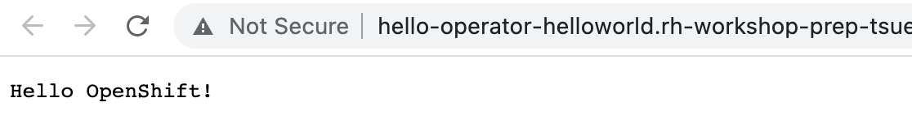

Exercise 2¶
In this exercise you will complete the following:
- Expand Ansible role to get the cluster domain name and save that in a fact
- Expand the Ansible role to deply a helloworld application
- Test the operator using the ansible-runner
- Deploy operator to namespace so it runs without the ansible-runner
Step 1: Update Ansible role to get cluster domain name and save as a fact¶
Here we will learn to use the k8s Ansible module to gather information we want to use later in our automation. In this case the cluster domain name. Append the following tasks to the Ansible role.
We going to use following Asible `keywords:
nano roles/hello/tasks/main.yml
Content to addd to the main.yml:
- name: Get Application Domain from Cluster Ingress
k8s_info:
api_version: config.openshift.io/v1
kind: Ingress
name: cluster
when: application_domain is undefined
register: ingress
- name: Set Application Domain
set_fact:
application_domain: "{{ ingress.resources[0].spec.domain }}"
when: application_domain is undefined
- name: Print application domain
debug:
msg: "Application domain is {{ application_domain }}"
Step 2: Run Operator using ansible-runner¶
Each time Operator is started or something changes with our CRD the Ansible role will run and our changes will of course be executed.
ansible-operator run local
In the Example output you see the execution of the predefined tasks in the main.yml.
Gathering Facts
--------------------------- Ansible Task StdOut -------------------------------
TASK [Gathering Facts] *********************************************************
-------------------------------------------------------------------------------
{"level":"info","ts":1612430621.8876169,"logger":"logging_event_handler","msg":"[playbook debug]","name":"hello-sample","namespace":"operator-helloworld","gvk":"cache.hello.example.com/v1, Kind=Hello","event_type":"runner_on_ok","job":"3916589616287113937","EventData.TaskArgs":""}
Hello World Task
--------------------------- Ansible Task StdOut -------------------------------
TASK [Hello World Task] ********************************
ok: [localhost] => {
"msg": "Hello World! I live in a namespace called operator-helloworld"
}
"level":"info","ts":1612430621.8958986,"logger":"logging_event_handler","msg":"[playbook task]","name":"hello-sample","namespace":"operator-helloworld","gvk":"cache.hello.example.com/v1, Kind=Hello","event_type":"playbook_on_task_start","job":"3916589616287113937","EventData.Name":"hello : Get Application Domain from Cluster Ingress"}
hello : Get Application Domain from Cluster Ingress
-------------------------- Ansible Task StdOut -------------------------------
TASK [hello : Get Application Domain from Cluster Ingress] *********************
task path: /home/ubuntu/operator-helloworld/roles/hello/tasks/main.yml:8
"level":"info","ts":1612430622.4394364,"logger":"proxy","msg":"Skipping cache lookup","resource":{"IsResourceRequest":false,"Path":"/version","Verb":"get","APIPrefix":"","APIGroup":"","APIVersion":"","Namespace":"","Resource":"","Subresource":"","Name":"","Parts":null}}
....
Print application domain
--------------------------- Ansible Task StdOut -------------------------------
TASK [Print application domain] ********************************
ok: [localhost] => {
"msg": "Application domain is rh-workshop-..000.us-south.containers.appdomain.cloud"
}
level":"info","ts":1612430626.1358507,"logger":"runner","msg":"Ansible-runner exited successfully","job":"3916589616287113937","name":"hello-sample","namespace":"operator-helloworld"}
PLAY RECAP
--------------------------- Ansible Task Status Event StdOut -----------------
PLAY RECAP *********************************************************************
localhost : ok=5 changed=0 unreachable=0 failed=0 skipped=0 rescued=0 ignored=0
Step 3: Update Ansible role to deploy hellowoworld application¶
Now we will learn to use the k8s Ansible module to deploy an application.
We will deploy a helloworld application that prints to STDOUT.
Notice the route is using the cluster domain we gathered in the previous step. In this step we will create a deployment, service and route for our helloworld application.
Append the following tasks to the Ansible role.
nano roles/hello/tasks/main.yml
- We use
k8s:definition:to define theService,DeploymentandRoute
- name: Deploy helloworld service
k8s:
definition:
apiVersion: v1
kind: Service
metadata:
namespace: "{{ ansible_operator_meta.namespace }}"
labels:
app: helloworld
name: helloworld
spec:
ports:
- port: 8080
targetPort: 8080
selector:
app: helloworld
name: helloworld
status:
loadBalancer: {}
- name: Deploy helloworld app
k8s:
definition:
kind: Deployment
apiVersion: apps/v1
metadata:
name: helloworld
namespace: "{{ ansible_operator_meta.namespace }}"
labels:
app: helloworld
spec:
replicas: 1
strategy:
type: RollingUpdate
selector:
matchLabels:
app: helloworld
template:
metadata:
labels:
app: helloworld
name: helloworld
spec:
containers:
- image: openshift/hello-openshift
imagePullPolicy: Always
name: helloworld
readinessProbe:
httpGet:
path: /
port: 8080
initialDelaySeconds: 60
periodSeconds: 10
timeoutSeconds: 60
livenessProbe:
httpGet:
path: /
port: 8080
initialDelaySeconds: 120
periodSeconds: 10
ports:
- containerPort: 8080
restartPolicy: Always
triggers:
- type: ConfigChange
- name: Deploy helloworld route
k8s:
definition:
apiVersion: route.openshift.io/v1
kind: Route
metadata:
namespace: "{{ ansible_operator_meta.namespace }}"
annotations:
openshift.io/host.generated: "true"
name: helloworld
spec:
host: "hello-{{ ansible_operator_meta.namespace }}.{{application_domain}}"
to:
kind: Service
name: helloworld
weight: 100
port:
targetPort: 8080
wildcardPolicy: None
Step 4: Update role permissions¶
Since we are creating a service and route we need to add those permissions to the hello role,
to add services so we can create them.
Open the role.yaml file. (More about roles)
nano config/rbac/role.yaml
Change the permissions.
##
## Rules for cache.hello.example.com/v1, Kind: Hello
##
- apiGroups:
- ""
resources:
- secrets
- pods
- pods/exec
- pods/log
- services
verbs:
- create
- delete
- get
- list
- patch
- update
- watch
Append also routes and ingress api groups so we can also manage those objects.
##
## Rules for cache.hello.example.com/v1, Kind: Hello
##
...
...
- apiGroups:
- ""
- config.openshift.io
resources:
- ingresses
verbs:
- create
- delete
- deletecollection
- get
- list
- patch
- update
- watch
- apiGroups:
- ""
- route.openshift.io
resources:
- routes
- routes/custom-host
verbs:
- create
- delete
- deletecollection
- get
- list
- patch
- update
- watch
Step 5: Run Operator using ansible-runner¶
This time we should see the application being deployed.
A single pod should start and a service/route should be created.
ansible-operator run local
Step 6: Test our deployment¶
To test simply use curl against the route URL. It does take a minute or so to start application.
- pods:
oc get pods
Example output:
NAME READY STATUS RESTARTS AGE
helloworld-f9d964dcc-jgcmn 1/1 Running 0 70s
oc get routes
Example output:
NAME HOST/PORT PATH SERVICES PORT TERMINATION WILDCARD
helloworld hello-operator-helloworld.apps.xxxxx.com helloworld 8080
- Invoke
YOURURL with curl or just open a browser and insert the URL
$ curl http://hello-operator-helloworld.xxxxxx.com
Hello OpenShift!
Optional Step 7: Open the Developer perspective in your RedHat web console¶
- Select
operator-helloworldproject - Select
external routefrom thehelloworldpod

- Verify the application in your browser
